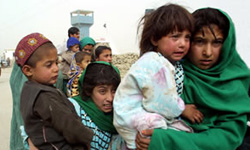

پذيرش > اخبار > نگاه نگران 400 هزار كودك "دو رگه" به آيندهاي پر ابهام


 نگاه نگران 400 هزار كودك "دو رگه" به آيندهاي پر ابهام نگاه نگران 400 هزار كودك "دو رگه" به آيندهاي پر ابهام
6 مهر 1390 - - نسخه قابل چاپ
فارس: بیش از 400 هزار کودک بی شناسنامه حاصل ازدواج زن ایرانی با اتباع خارجی که ازدواجشان ثبت نشده، در کشور وجود دارد. این کودکان به دلیل نداشتن شناسنامه از حق تحصیل و رفتن به مدرسه محروم هستند.
به گزارش خبرنگار اجتماعی فارس، وضعیت کودکان اتباع بیگانه که حاصل ازدواج زن ایرانی با مرد خارجی است در بلاتکلیفی است.
این کودکان که تعداد آنها هم کم نیست به دلیل نامشخص بودن وضعیت تابعیت و نداشتن شناسنامه مورد قبول از نظر مراجع حقوقی در ایران از دریافت امکانات اولیه همچون بهداشت و درمان و مددکاری محرومند.
در ایران تابعیت فرزندان، تابعیت پدر خانواده است و در ازدواجی که صورت می گیرد، فرزند تابعیتی از پدر میگیرد.
براساس ماده ۹۷۶ قانون مدنی ایران، به افرادی که پدر آنها ایرانی است، خواه در ایران یا خارج متولد شده باشند، تابعیت ایرانی داده میشود؛ اما در این ماده اشارهای به افرادی که مادر آنها ایرانی است نشده است. از سوی دیگر بر اساس ماده ۱۰۶۰ قانون مدنی، ازدواج زن ایرانی با تبعه خارجی موکول به اجازه مخصوص از سوی دولت است.
تعداد زیادی از دختران ایرانی با اتباع خارجی به خصوص افغان یا عراقی ازدواج کردهاند و در ایران زندگی میکنند اما فرزندان آنها دارای شناسنامه نیستند.در سال ۱۳۸۵ مجلس شورای اسلامی ماده ۹۷۶ قانون مدنی را اصلاح کرد به این صورت که فرزندان حاصل از ازدواج زنان ایرانی با مردان خارجی که در ایران متولد شده یا تا یک سال پس از تصویب این قانون در ایران متولد میشوند، میتوانند پس از ۱۸ سالگی تابعیت ایرانی پیدا کنند.
یکی از این ناهنجاریها ازدواج مهاجران خارجی با اتباع ایرانی و به ویژه ازدواج مردان خارجی با زنان ایرانی است که بدون رعایت مقررات قانونی صورت گرفته و فرزندان آنها در صورتی که ازدواج آنها ثبت نشده باشد دچار مشکل میشوند و بعضا بچه های این افراد بیسواد هستند چرا که حتی از دریافت امکانات عادی نیز محروم هستند.
شرایط دریافت سند تابعیت ایرانی
ازدواج زن ایرانی با مرد خارجی باید ثبت شود و برای این کار باید از دولت اجازه دریافت کنند در غیر اینصورت فرزندان آنها بدون هویت میشود.
سیداحمد قشمی مدیر کل ثبت احوال استان تهران در این باره به خبرنگار فارس میگوید در استانهای مرزی کشورمان این موضوع بیشتر دیده میشود.
وی با بیان اینکه زنان ایرانی که با مردان خارجی ازدواج میکنند در صورتی که ازدواج آنها ثبت نشود مشکلاتی برای فرزندان آنها در دریافت خدمات ایجاد میشود، میگوید: این افراد فاقد هویت هستند و شناسنامه برای آنها صادر نمیشود.
باید پروانه زناشویی دریافت کنند
همچنین علی زاهدینیا مدیر کل ثبت احوال سیستان و بلوچستان در این باره به خبرنگار فارس میگوید: زن ایرانی که با مرد خارجی ازدواج میکند باید ازدواجش ثبت شود و زوجین پروانه زناشویی دریافت کنند و بعد از طی مراحل قانونی فرزندان آنها خدمات دریافت کنند.
وی به قانونی که در سال 85 در مجلس شورای اسلامی تصویب شده است اشاره میکند و میگوید: باید این افراد ازدواج خود را ثبت کنند. تا 18 سالگی به فرزندان آنها کارتی داده می شود تا بتوانند از خدمات استفاده کنند. از 18 تا 19 سالگی اگر کشور را ترک نکنند برایشان سند ورود به تابعیت ایرانی صادر و بعد از آن برای آنها شناسنامه صادر میشود.
زاهدینیا ادامه میدهد: عدهای هستند که این تشریفات را رعایت نمیکنند و ازدواجشان را ثبت نمیکند و همین امر باعث میشود که کودکان این افراد دچار مشکل شوند. چرا که به فرزندان آنها شناسنامه داده نمیشود.
مشکل دریافت یارانه و تحصیل دارند
چندی پیش تعدادی از مجلس شورای اسلامی برای رفع این مشکل طرحی را ارائه کردند که طرح بنا به دلایلی در مجلس رد شد. قرار است دوباره طرح جدیدی در این زمینه به مجلس ارسال شود تا شاید مشکل این کودکان که تعداد آنها نیز کم نیست برطرف شود.
زهره الهیان نماینده مردم تهران در مجلس شورای اسلامی در این باره به خبرنگار فارس میگوید: فرزندان حاصل از ازدواج زن ایرانی با همسر خارجی در شرایط فعلی ایرانی محسوب نمیشوند و تابعیت آنها با مشکلات جدی روبرو ست.
وی ادامه میدهد: فرزندان خانمهای ایرانی که همسرشان خارجی است مشکلات جدی برای تحصیل، شناسنامه، سفر و در حال حاضر در بحث یارانهها دارند.
ازدواج را رسمی ثبت کنند
الهیان بیان میکند: پیشنهاد دادهایم اگر خانم ایرانی براساس ماده 1060 قانون مدنی ازدواجشان را ثبت و مجوز لازم را اخذ کنند تا فرزندان آنها بتوانند تابعیت ایرانی داشته باشند.
طرح قبلی رد شد؛ طرح جدید به صحن مجلس میرود
این نماینده مجلس با بیان اینکه طرح قبلی در این زمینه داشتیم که در کمیسیون قضایی رد شد میگوید: اصلاحاتی انجام دادیم و تلاش میکنیم مجددا این طرح به صحن مجلس آمده و در صورتی که کلیات آن رأی بیاورد در کمیسیون قضایی اصلاحات را انجام میدهیم تا این کار به درستی انجام شود.
الهیان ادامه میدهد: فکر میکنم تصویب این طرح باعث ساماندادن به این ازدواجها شود و فرزندان این دسته از افراد از بلاتکلیفی خارج شوند.
با این طرح والدین میتوانند برای فرزندانشان تابعیت بگیرند
وی در پاسخ به این پرسش که زنان ایرانی که با مردان خارجی ازدواج کرده و ازدواج آنها ثبت نشده بچههای آنها در بلاتکلیفی هستند، میگوید: اگر این طرح تصویب و تبدیل به قانون شود حسن آن این است که این دسته از پدر و مادرها میتوانند برای فرزندانشان تابعیت بگیرند.
نماینده مردم تهران در مجلس شورای اسلامی ادامه داد: افراد باید ازدواجشان را دولت اعلام و اجازه در این زمینه دریافت کنند.
وی با بیان اینکه این ازدواجها خیلی زیاد نیست، میگوید: اما باید سرو سامانی به آنها داده و مشکلات را برطرف کنیم.
به گزارش فارس، با بازگشایی مدارس تعداد زیادی از کودکانی که حاصل ازدواج زن ایرانی با مرد خارجی هستند و پیوند آنها به صورت قانونی ثبت نشده از تحصیل محروم شدهاند، امید است هر چه سریعتر این مشکل برطرف شود.
ارسال به
بالاترین
،
توییتر
،
فریندفید
،
فیسبوک
در همين بخش :
 پروین ذبیحی برنده جایزه حقوق بشری سازمان غيردولتى اتريشى سودويند شد پروین ذبیحی برنده جایزه حقوق بشری سازمان غيردولتى اتريشى سودويند شد
پخش کارت پستال و بروشور در روز جهانی زن در تهران
تمدید زمان برای امضای بیانیهی جمعی از فعالان زن به مناسبت هشت مارس
مجوزی که در نطفه خفه شد
بیش از 2000 امضا در اعتراض به تبعیض های آموزشی به مجلس تحویل داده شد
ديگر بخش ها :
طرح یک میلیون امضا
|
مقالات
|
سایت نوشته ها
|
اخبار
|
گزارش كمپين
|
گفت و گو
|
علیه سکوت
|
كوچه به كوچه
|
نامه های شما
|
گزارش ویژه
|
گفتگو با اعضا
|
ویژه سالگرد کمپین
|
تصویر برابری
|
دل آرام علی
|
تریبون
|
مقالات
|
تاریخ شفاهی
|
خارج از چارچوب
|
کتابخانه
|
درباره کمپین
|
کمپین در شهرها
|
کمپین در بند
|
صدای تغییر
|
ویژه 22 خرداد
|
لایحه حمایت از خانواده
|
گالری
|
عشا مومنی
|
امیر یعقوبعلی
|
خدیجه مقدم
|
راحله عسگری زاده و نسیم خسروی
|
پروین اردلان،جلوه جواهری، مریم حسین خواه، ناهید کشاورز
|
زینب پیغمبرزاده
|
سعیده امین، سارا ایمانیان، محبوبه حسین زاده، ناهید کشاورز و همایون نامی
|
احترام شادفر
|
نسیم سرابندی زاده،فاطمه دهدشتی
|
وبلاگ مهمان
|
پرونده خرم آباد
|
دستگیری ها
|
مریم مالک
|
پرستو اللهیاری
|
مهرنوش اعتمادی
|
سمیه رشیدی
|
Other Languages
|
همراهان
|
«فراخوان کمپین ده روز با بهاره هدایت»
| English
|